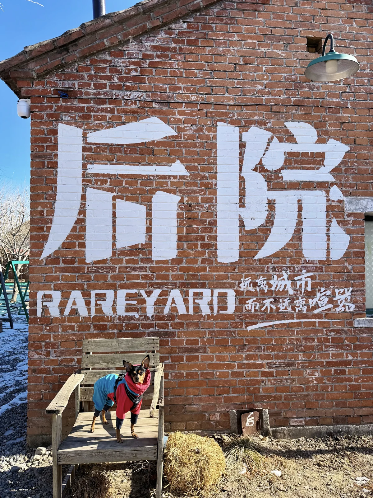
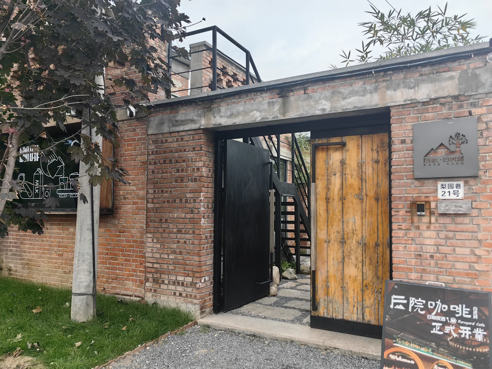

白虎涧 + 后院咖啡
春季周末 · 先走北京后花园山线，再到山脚庭院咖啡放松的一日线
北京·昌平
白虎涧后院咖啡
6.5h
39km
7.4km / 412m / 3.4h
L4 可执行
五道口出发
封面速览



图片优先用真实 session 下的小红书搜索结果卡片图做 vibe 层理解；徒步定量以六只脚页面为准，目的地公开信息以携程 / Bing / 点评公开结果补证。
行程卡
| 字段 | 内容 |
|---|---|
| 区域 | 北京·昌平 |
| 主题 | 白虎涧后院咖啡 |
| 总时长 | 6.5h |
| 预估自驾 | 39km |
| 徒步参数 | 7.4km / 412m / 3.4h |
| 强度 | 轻中度 |
| 适合 | 想要一点野趣 / 想看沟谷和山势 / 想要下山后还能坐一会儿的人 |
| 一句话结论 | 它比普通公园更有山感，但整体又没到特别硬核，适合做“认真徒步 + 轻松收尾”的新版补充路线。 |
路线摘要
这条线的优点是“野趣感”很足，但整体仍在可控区间。先去白虎涧把山线走完整，再回到后白虎涧村一带喝杯咖啡，节奏自然。
🏞️ 目的地介绍
白虎涧这条线在六只脚上能看到近期成熟轨迹，例如 trip 9938839：全长 7.4km、累计上升 412m、历时 3h24m，起终点都在北京昌平区，适合作为周末自驾版轻认真徒步。Bing 上的 携程景点页和大众点评攻略结果也都把它描述为北京后花园 / 白虎涧风景区，公开存在性清晰。
✨ 搭配内容
小红书里“白虎涧 咖啡”“白虎涧 后院 咖啡”的结果比较稳定，能看到山脚庭院、宠物友好和村落慢节奏这些关键词。这里的拔草点不一定是最强餐饮，而是“走完山以后还能慢下来”的状态。
推荐行程安排
| # | 安排 | 时长 |
|---|---|---|
| 1 | 五道口出发，直接开去北京后花园（白虎涧）风景区附近停车 | 1.0h |
| 2 | 白虎涧徒步主线，控制在成熟环线节奏里 | 3.4h |
| 3 | 回到后白虎涧村周边，找庭院咖啡 / 轻食慢慢坐 | 1.0h |
| 4 | 返程，若状态好可顺手在村里再走一小圈 | 1.1h |
多源验证速记
六只脚
近期可核验轨迹：9938839。页面可读到 7.4km、412m、3h24m、北京昌平区 → 北京昌平区、难度简单。
小红书
“白虎涧 咖啡 / 白虎涧 后院 咖啡”能稳定看到山脚庭院、宠物友好、慢节奏收尾的内容方向。
点评 / Bing
Bing 检索“大众点评 白虎涧”能读到景区攻略、交通和停车信息；同时能看到“后院·白虎涧”作为山脚慢生活锚点。
携程
公开景点页可对齐“北京后花园（白虎涧）风景区”位置与基础信息，适合补目的地存在性。
为什么保留这条
- 和现有大黑山相比，它更偏沟谷 / 景区式山线，风格不重复。
- 和怀柔书画山相比，它更像“真徒步后回村里休息”的一整天。
- 资料链路完整：六只脚、小红书、携程、点评公开结果都能形成闭环。
临门一脚 / 风险提示
- 景区型路线周末人流可能明显高于纯野线，适合早点到。
- 山脚咖啡 / 民宿型商户节奏偏慢，别按高翻台餐厅预期去。
- 如果你更想要绝对清静和“无人感”，这条不如书画山。